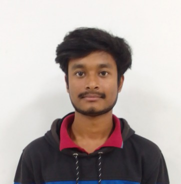

I am a third-year B.Tech Engineering Physics undergraduate at IIT Patna (CGPA 8.34). My specialization includes optical and electro-optical instrumentation, photonic systems, and space communication technologies. I integrate experimental optics, laser-based trapping, imaging systems, and computational modeling of optical and RF communication links to develop high-performance sensing, tracking, and communication architectures.
Laser Systems (VIS–IR), Optical Alignment, Gaussian & Fourier Optics, PSF Modelling, Optical Metrology, Polarization Optics, Noise & SNR Analysis, Optical Calibration, Optical Force Modelling
Optical Tweezers, Photonic Nanojets, Mid-IR Nanojet-Assisted Trapping, Near-Field Confinement, Microscopy Design, Beam Shaping, Opto-Mechanical Integration
Beaconless Optical Communication, Acquisition-Tracking-Pointing (ATP) Simulation, FSM Modeling, Satellite Links (LEO/MEO/GEO), Free-Space Optics, Link Budget Analysis, Doppler & BER Analysis, Ground Station Scheduling
Python, MATLAB, C/C++, Monte Carlo Simulation, Orbital Mechanics (TLE/SGP4), Scientific Computing, Signal & Image Processing, Zemax, Machine Learning
Supervisor: Dr. Venkata Ramanaiah Dantham, IIT Patna
Duration: Mar 2026 – Present
Developing a CO₂ laser (10.6 μm, 30 W) based photonic-nanojet platform for mid-IR near-field enhancement and nanojet-assisted trapping of metallic and high-index nanoparticles. This is a novel experimental initiative in India, exploring PNJ trapping in the mid-IR range.
Techniques & Tools: Optical Tweezers, Mid-IR Nanojet Trapping, Laser Systems, Beam Shaping, Optical Alignment, Experimental Optics
Duration: Mar 2026
Developed a Python-based framework for scheduling and robustness analysis of ISRO Earth Observation satellites. Implemented greedy, optimal, and priority-based multi-antenna scheduling algorithms, integrated orbital mechanics using SGP4 and Skyfield, and conducted failure simulations achieving 97.31% network availability.
Techniques & Tools: Python, Skyfield, SGP4, Scheduling Algorithms, Monte Carlo Simulation, Reliability Metrics, Data Visualization
Supervisor: Dr. Venkata Ramanaiah Dantham, IIT Patna
Duration: Mar 2025 – Dec 2025
Implemented high-NA single-beam optical tweezers; achieved 3D trapping of sub-2 µm PMMA microspheres using a 650 nm diode laser.
Techniques & Tools: Optical Sensors, Imaging Optics, Optical Calibration, Light–Matter Interaction
Supervisor: Dr. Pranav Pandey, Head- OCSD, SAC, ISRO
Duration: May 2025 – Aug 2025
Python-based simulation for beaconless optical ATP systems; modeled pointing errors, implemented spiral/raster scanning for LEO/MEO/GEO links, and optimized optical terminal performance under SWaP constraints.
Techniques & Tools: Optical Signal Processing, Detectors, Imaging Systems, Space Optics, Python Simulation
Context: GDG Solutions Challenge
Flask-based web app with authentication, ML resume parser, client-side validation, and dashboard.
Stack: Python, Flask, HTML, CSS, JavaScript, scikit-learn
Context: Celesta 2024, IIT Patna
ML/ANN system with TensorFlow; handled imbalanced data, evaluated with precision/recall/F1 over 300 epochs.
Stack: Python, Pandas, scikit-learn, TensorFlow
Description: Personal portfolio website built from scratch to showcase academic, research, and technical achievements.
Tech Stack: HTML, CSS, JavaScript
Context: Womanium + QWorld Quantum & AI Program
Applied KNN, Bayesian Ridge, Extra Trees, Random Forest for earthquake depth prediction. Feature engineering, visualization, and classification modeling were performed.
Tech Stack: Python, scikit-learn, Pandas, Matplotlib
Captain, IIT Patna Chess Team; led at 57th Inter-IIT Sports Meet 2024.
Self-taught sketch artist exploring creative ideas in my free time.
Volleyball and chess enthusiast; enjoy sports with friends.